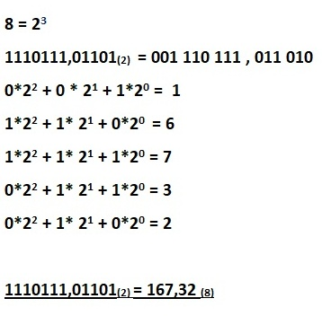
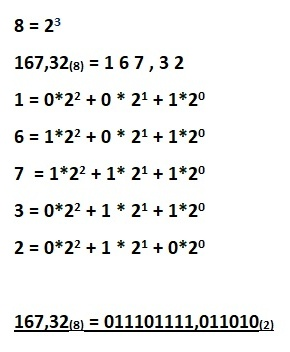

3. PRETVORBA - iz p poljubne osnove v novo osnovo (njeno potenco)
V tem razdelku bo predstavljeno pretvarjanje iz enega številskega sestava v drugi.
!!Drugi je predstavljen kot potenca prvega.
PRIMER: (pretvarjamo iz (2) v (8)) ~ število 1110111,01101(2) želimo pretvoriti v četrtiški številski sestav ~

Pri pretvorbi iz poljubnega številskega sestava v poljubni številski sestav, ki predstavlja potenco prvega, je prvi korak vedno zapis potence (v našem primeru 8 = 23). Tako bo glavno vlogo pri pretvarjanju igral eksponent. Najprej število, ki ga pretvarjamo, razdelimo v kupčke po n (n = eksponent) in ga zapišemo kot vsoto produktov potenc osnove in števke. Števka predstavlja števko pretvorjenega števila.
OBRATNI PRIMER: (pretvarjamo iz (8) v (2)) ~ število 167,32(8) želimo pretvoriti v dvojiški številski sestav ~

Pri obratni pretvorbi se le-ta začne v obratnem vrstnem redu. Še vedno je pomemben eksponent ( če pretvarjamo iz (8) v (2) bo eksponent 3). Tako vsako števko zapišemo kot vsoto produktov osnove in števila. Števke, ki jih množimo z osnovo, so števke, ki predstavljajo novo število, v katerega smo pretvarjali.